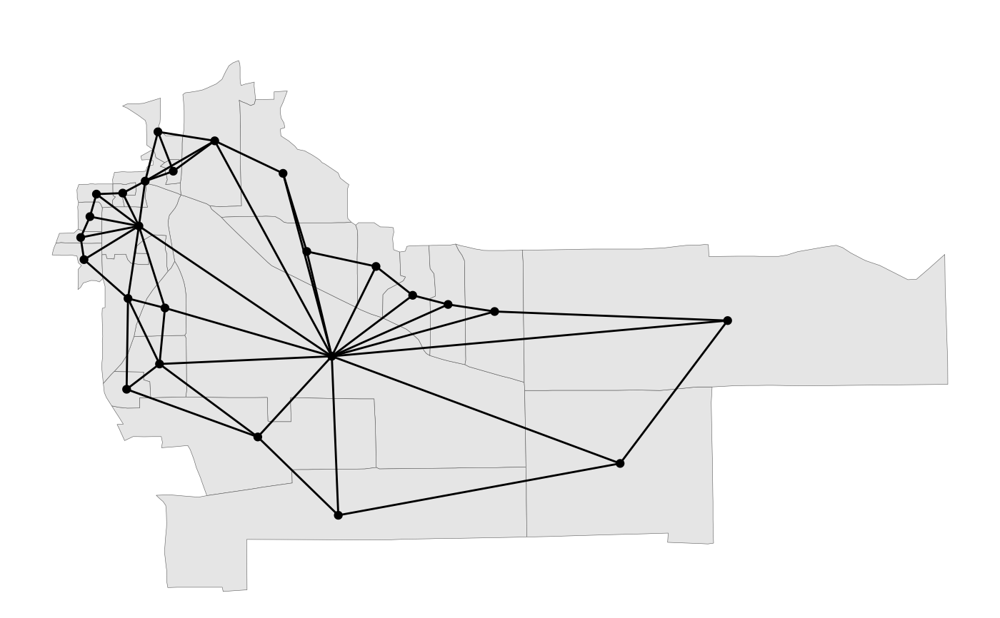
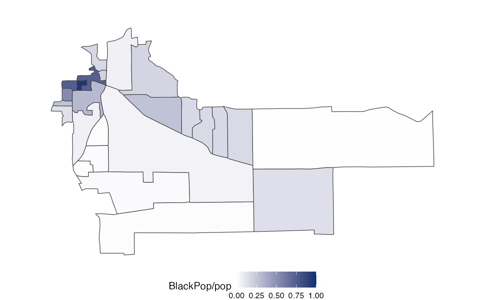

Plot a redist_map
# S3 method for redist_map
plot(x, fill = NULL, by_distr = FALSE, adj = FALSE, ...)Arguments
- x
the
redist_mapobject- fill
<data-masking>If present, will be used to color the map units. If using data masking, may need to explicitly name argumentfill=...in non-interactive contexts to avoid S3 generic issues.- by_distr
if
TRUEandfillis not missing and, color by district and indicate thefillvariable by shading.- adj
if
TRUE, force plotting the adjacency graph. Overridesby_distr.- ...
passed on to
redist.plot.map(orredist.plot.adjifadj=TRUE). Useful parameters may includezoom_to,boundaries, andtitle.
Value
ggplot2 object
Examples
data(fl25)
d <- redist_map(fl25, ndists = 3, pop_tol = 0.05)
#> Projecting to CRS 3857
plot(d)

plot(d, BlackPop/pop)

data(fl25_enum)
fl25$dist <- fl25_enum$plans[, 5118]
d <- redist_map(fl25, existing_plan = dist)
#> Projecting to CRS 3857
plot(d)